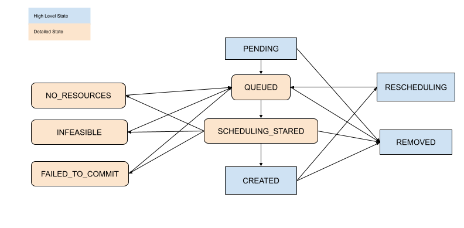

Placement Groups
Contents
Placement Groups#
Placement groups allow users to atomically reserve groups of resources across multiple nodes (i.e., gang scheduling). They can be then used to schedule Ray tasks and actors packed as close as possible for locality (PACK), or spread apart (SPREAD). Placement groups are generally used for gang-scheduling actors, but also support tasks.
Here are some real-world use cases:
Distributed Machine Learning Training: Distributed Training (e.g., Ray Train and Ray Tune) uses the placement group APIs to enable gang scheduling. In these settings, all resources for a trial must be available at the same time. Gang scheduling is a critical technique to enable all-or-nothing scheduling for deep learning training.
Fault tolerance in distributed training: Placement groups can be used to configure fault tolerance. In Ray Tune, it can be beneficial to pack related resources from a single trial together, so that a node failure impacts a low number of trials. In libraries that support elastic training (e.g., XGBoost-Ray), spreading the resources across multiple nodes can help to ensure that training continues even when a node dies.
Key Concepts#
Bundles#
A bundle is a collection of “resources”. It could be a single resource, {"CPU": 1}, or a group of resources, {"CPU": 1, "GPU": 4}.
A bundle is a unit of reservation for placement groups. “Scheduling a bundle” means we find a node that fits the bundle and reserve the resources specified by the bundle.
A bundle must be able to fit on a single node on the Ray cluster. For example, if you only have an 8 CPU node, and if you have a bundle that requires {"CPU": 9}, this bundle cannot be scheduled.
Placement Group#
A placement group reserves the resources from the cluster. The reserved resources can only be used by tasks or actors that use the PlacementGroupSchedulingStrategy.
Placement groups are represented by a list of bundles. For example,
{"CPU": 1} * 4means you’d like to reserve 4 bundles of 1 CPU (i.e., it reserves 4 CPUs).Bundles are then placed according to the placement strategies across nodes on the cluster.
After the placement group is created, tasks or actors can be then scheduled according to the placement group and even on individual bundles.
Create a Placement Group (Reserve Resources)#
You can create a placement group using ray.util.placement_group().
Placement groups take in a list of bundles and a placement strategy.
Note that each bundle must be able to fit on a single node on the Ray cluster.
For example, if you only have a 8 CPU node, and if you have a bundle that requires {"CPU": 9},
this bundle cannot be scheduled.
Bundles are specified by a list of dictionaries, e.g., [{"CPU": 1}, {"CPU": 1, "GPU": 1}]).
CPUcorresponds tonum_cpusas used inray.remote.GPUcorresponds tonum_gpusas used inray.remote.memorycorresponds tomemoryas used inray.remoteOther resources corresponds to
resourcesas used inray.remote(E.g.,ray.init(resources={"disk": 1})can have a bundle of{"disk": 1}).
Placement group scheduling is asynchronous. The ray.util.placement_group returns immediately.
from pprint import pprint
import time
# Import placement group APIs.
from ray.util.placement_group import (
placement_group,
placement_group_table,
remove_placement_group,
)
from ray.util.scheduling_strategies import PlacementGroupSchedulingStrategy
# Initialize Ray.
import ray
# Create a single node Ray cluster with 2 CPUs and 2 GPUs.
ray.init(num_cpus=2, num_gpus=2)
# Reserve a placement group of 1 bundle that reserves 1 CPU and 1 GPU.
pg = placement_group([{"CPU": 1, "GPU": 1}])
// Initialize Ray.
Ray.init();
// Construct a list of bundles.
Map<String, Double> bundle = ImmutableMap.of("CPU", 1.0);
List<Map<String, Double>> bundles = ImmutableList.of(bundle);
// Make a creation option with bundles and strategy.
PlacementGroupCreationOptions options =
new PlacementGroupCreationOptions.Builder()
.setBundles(bundles)
.setStrategy(PlacementStrategy.STRICT_SPREAD)
.build();
PlacementGroup pg = PlacementGroups.createPlacementGroup(options);
// Initialize Ray.
ray::Init();
// Construct a list of bundles.
std::vector<std::unordered_map<std::string, double>> bundles{{{"CPU", 1.0}}};
// Make a creation option with bundles and strategy.
ray::internal::PlacementGroupCreationOptions options{
false, "my_pg", bundles, ray::internal::PlacementStrategy::PACK};
ray::PlacementGroup pg = ray::CreatePlacementGroup(options);
You can block your program until the placement group is ready using one of two APIs:
ready, which is compatible withray.getwait, which blocks the program until the placement group is ready)
# Wait until placement group is created.
ray.get(pg.ready(), timeout=10)
# You can also use ray.wait.
ready, unready = ray.wait([pg.ready()], timeout=10)
# You can look at placement group states using this API.
print(placement_group_table(pg))
// Wait for the placement group to be ready within the specified time(unit is seconds).
boolean ready = pg.wait(60);
Assert.assertTrue(ready);
// You can look at placement group states using this API.
List<PlacementGroup> allPlacementGroup = PlacementGroups.getAllPlacementGroups();
for (PlacementGroup group: allPlacementGroup) {
System.out.println(group);
}
// Wait for the placement group to be ready within the specified time(unit is seconds).
bool ready = pg.Wait(60);
assert(ready);
// You can look at placement group states using this API.
std::vector<ray::PlacementGroup> all_placement_group = ray::GetAllPlacementGroups();
for (const ray::PlacementGroup &group : all_placement_group) {
std::cout << group.GetName() << std::endl;
}
Let’s verify the placement group is successfully created.
# This API is only available when you download Ray via `pip install "ray[default]"`
ray list placement-groups
======== List: 2023-04-07 01:15:05.682519 ========
Stats:
------------------------------
Total: 1
Table:
------------------------------
PLACEMENT_GROUP_ID NAME CREATOR_JOB_ID STATE
0 3cd6174711f47c14132155039c0501000000 01000000 CREATED
The placement group is successfully created. Out of the {"CPU": 2, "GPU": 2} resources, the placement group reserves {"CPU": 1, "GPU": 1}.
The reserved resources can only be used when you schedule tasks or actors with a placement group.
The diagram below demonstrates the “1 CPU and 1 GPU” bundle that the placement group reserved.

Placement groups are atomically created; if a bundle cannot fit in any of the current nodes,
the entire placement group is not ready and no resources are reserved.
To illustrate, let’s create another placement group that requires {"CPU":1}, {"GPU": 2} (2 bundles).
# Cannot create this placement group because we
# cannot create a {"GPU": 2} bundle.
pending_pg = placement_group([{"CPU": 1}, {"GPU": 2}])
# This raises the timeout exception!
try:
ray.get(pending_pg.ready(), timeout=5)
except Exception as e:
print(
"Cannot create a placement group because "
"{'GPU': 2} bundle cannot be created."
)
print(e)
You can verify the new placement group is pending creation.
# This API is only available when you download Ray via `pip install "ray[default]"`
ray list placement-groups
======== List: 2023-04-07 01:16:23.733410 ========
Stats:
------------------------------
Total: 2
Table:
------------------------------
PLACEMENT_GROUP_ID NAME CREATOR_JOB_ID STATE
0 3cd6174711f47c14132155039c0501000000 01000000 CREATED
1 e1b043bebc751c3081bddc24834d01000000 01000000 PENDING <---- the new placement group.
You can also verify that the {"CPU": 1, "GPU": 2} bundles cannot be allocated, using the ray status CLI command.
ray status
Resources
---------------------------------------------------------------
Usage:
0.0/2.0 CPU (0.0 used of 1.0 reserved in placement groups)
0.0/2.0 GPU (0.0 used of 1.0 reserved in placement groups)
0B/3.46GiB memory
0B/1.73GiB object_store_memory
Demands:
{'CPU': 1.0} * 1, {'GPU': 2.0} * 1 (PACK): 1+ pending placement groups <--- 1 placement group is pending creation.
The current cluster has {"CPU": 2, "GPU": 2}. We already created a {"CPU": 1, "GPU": 1} bundle, so only {"CPU": 1, "GPU": 1} is left in the cluster.
If we create 2 bundles {"CPU": 1}, {"GPU": 2}, we can create a first bundle successfully, but can’t schedule the second bundle.
Since we cannot create every bundle on the cluster, the placement group is not created, including the {"CPU": 1} bundle.

When the placement group cannot be scheduled in any way, it is called “infeasible”.
Imagine you schedule {"CPU": 4} bundle, but you only have a single node with 2 CPUs. There’s no way to create this bundle in your cluster.
The Ray Autoscaler is aware of placement groups, and auto-scales the cluster to ensure pending groups can be placed as needed.
If Ray Autoscaler cannot provide resources to schedule a placement group, Ray does not print a warning about infeasible groups and tasks and actors that use the groups. You can observe the scheduling state of the placement group from the dashboard or state APIs.
Schedule Tasks and Actors to Placement Groups (Use Reserved Resources)#
In the previous section, we created a placement group that reserved {"CPU": 1, "GPU: 1"} from a 2 CPU and 2 GPU node.
Now let’s schedule an actor to the placement group.
You can schedule actors or tasks to a placement group using
options(scheduling_strategy=PlacementGroupSchedulingStrategy(...)).
@ray.remote(num_cpus=1)
class Actor:
def __init__(self):
pass
def ready(self):
pass
# Create an actor to a placement group.
actor = Actor.options(
scheduling_strategy=PlacementGroupSchedulingStrategy(
placement_group=pg,
)
).remote()
# Verify the actor is scheduled.
ray.get(actor.ready.remote(), timeout=10)
public static class Counter {
private int value;
public Counter(int initValue) {
this.value = initValue;
}
public int getValue() {
return value;
}
public static String ping() {
return "pong";
}
}
// Create GPU actors on a gpu bundle.
for (int index = 0; index < 1; index++) {
Ray.actor(Counter::new, 1)
.setPlacementGroup(pg, 0)
.remote();
}
class Counter {
public:
Counter(int init_value) : value(init_value){}
int GetValue() {return value;}
std::string Ping() {
return "pong";
}
private:
int value;
};
// Factory function of Counter class.
static Counter *CreateCounter() {
return new Counter();
};
RAY_REMOTE(&Counter::Ping, &Counter::GetValue, CreateCounter);
// Create GPU actors on a gpu bundle.
for (int index = 0; index < 1; index++) {
ray::Actor(CreateCounter)
.SetPlacementGroup(pg, 0)
.Remote(1);
}
Note
When you use an actor with a placement group, always specify num_cpus.
When you don’t specify (e.g., num_cpus=0), a placement group option is ignored,
and the task and actor don’t use the reserved resources.
Note that by default (with no arguments to ray.remote),
Ray task requires 1 CPU
Ray actor requires 1 CPU when it is scheduled. But after it is created, it occupies 0 CPU.
When scheduling an actor without resource requirements and a placement group, the placement group has to be created (since it requires 1 CPU to be scheduled). However, when the actor is created, it ignores the placement group.
The actor is scheduled now! One bundle can be used by multiple tasks and actors (i.e., the bundle to task (or actor) is a one-to-many relationship).
In this case, since the actor uses 1 CPU, 1 GPU remains from the bundle.
You can verify this from the CLI command ray status. You can see the 1 CPU is reserved by the placement group, and 1.0 is used (by the actor we created).
ray status
Resources
---------------------------------------------------------------
Usage:
1.0/2.0 CPU (1.0 used of 1.0 reserved in placement groups) <---
0.0/2.0 GPU (0.0 used of 1.0 reserved in placement groups)
0B/4.29GiB memory
0B/2.00GiB object_store_memory
Demands:
(no resource demands)
You can also verify the actor is created using ray list actors.
# This API is only available when you download Ray via `pip install "ray[default]"`
ray list actors --detail
- actor_id: b5c990f135a7b32bfbb05e1701000000
class_name: Actor
death_cause: null
is_detached: false
job_id: '01000000'
name: ''
node_id: b552ca3009081c9de857a31e529d248ba051a4d3aeece7135dde8427
pid: 8795
placement_group_id: d2e660ac256db230dbe516127c4a01000000 <------
ray_namespace: e5b19111-306c-4cd8-9e4f-4b13d42dff86
repr_name: ''
required_resources:
CPU_group_d2e660ac256db230dbe516127c4a01000000: 1.0
serialized_runtime_env: '{}'
state: ALIVE
Since 1 GPU remains, let’s create a new actor that requires 1 GPU.
This time, we also specify the placement_group_bundle_index. Each bundle is given an “index” within the placement group.
For example, a placement group of 2 bundles [{"CPU": 1}, {"GPU": 1}] has index 0 bundle {"CPU": 1}
and index 1 bundle {"GPU": 1}. Since we only have 1 bundle, we only have index 0. If you don’t specify a bundle, the actor (or task)
is scheduled on a random bundle that has unallocated reserved resources.
@ray.remote(num_cpus=0, num_gpus=1)
class Actor:
def __init__(self):
pass
def ready(self):
pass
# Create a GPU actor on the first bundle of index 0.
actor2 = Actor.options(
scheduling_strategy=PlacementGroupSchedulingStrategy(
placement_group=pg,
placement_group_bundle_index=0,
)
).remote()
# Verify that the GPU actor is scheduled.
ray.get(actor2.ready.remote(), timeout=10)
We succeed to schedule the GPU actor! The below image describes 2 actors scheduled into the placement group.

You can also verify that the reserved resources are all used, with the ray status command.
ray status
Resources
---------------------------------------------------------------
Usage:
1.0/2.0 CPU (1.0 used of 1.0 reserved in placement groups)
1.0/2.0 GPU (1.0 used of 1.0 reserved in placement groups) <----
0B/4.29GiB memory
0B/2.00GiB object_store_memory
Placement Strategy#
One of the features the placement group provides is to add placement constraints among bundles.
For example, you’d like to pack your bundles to the same
node or spread out to multiple nodes as much as possible. You can specify the strategy via strategy argument.
This way, you can make sure your actors and tasks can be scheduled with certain placement constraints.
The example below creates a placement group with 2 bundles with a PACK strategy;
both bundles have to be created in the same node. Note that it is a soft policy. If the bundles cannot be packed
into a single node, they are spread to other nodes. If you’d like to avoid the problem, you can instead use STRICT_PACK
policies, which fail to create placement groups if placement requirements cannot be satisfied.
# Reserve a placement group of 2 bundles
# that have to be packed on the same node.
pg = placement_group([{"CPU": 1}, {"GPU": 1}], strategy="PACK")
The image below demonstrates the PACK policy. Three of the {"CPU": 2} bundles are located in the same node.
The image below demonstrates the SPREAD policy. Each of three of the {"CPU": 2} bundles are located in three different nodes.

Ray supports four placement group strategies. The default scheduling policy is PACK.
STRICT_PACK
All bundles must be placed into a single node on the cluster. Use this strategy when you want to maximize the locality.
PACK
All provided bundles are packed onto a single node on a best-effort basis. If strict packing is not feasible (i.e., some bundles do not fit on the node), bundles can be placed onto other nodes.
STRICT_SPREAD
Each bundle must be scheduled in a separate node.
SPREAD
Each bundle is spread onto separate nodes on a best-effort basis. If strict spreading is not feasible, bundles can be placed on overlapping nodes.
Remove Placement Groups (Free Reserved Resources)#
By default, a placement group’s lifetime is scoped to the driver that creates placement groups
(unless you make it a detached placement group). When the placement group is created from
a detached actor, the lifetime is scoped to the detached actor.
In Ray, the driver is the Python script that calls ray.init.
Reserved resources (bundles) from the placement group are automatically freed when the driver or detached actor
that creates placement group exits. To free the reserved resources manually, remove the placement
group using the remove_placement_group API (which is also an asynchronous API).
Note
When you remove the placement group, actors or tasks that still use the reserved resources are forcefully killed.
# This API is asynchronous.
remove_placement_group(pg)
# Wait until placement group is killed.
time.sleep(1)
# Check that the placement group has died.
pprint(placement_group_table(pg))
"""
{'bundles': {0: {'GPU': 1.0}, 1: {'CPU': 1.0}},
'name': 'unnamed_group',
'placement_group_id': '40816b6ad474a6942b0edb45809b39c3',
'state': 'REMOVED',
'strategy': 'PACK'}
"""
PlacementGroups.removePlacementGroup(placementGroup.getId());
PlacementGroup removedPlacementGroup = PlacementGroups.getPlacementGroup(placementGroup.getId());
Assert.assertEquals(removedPlacementGroup.getState(), PlacementGroupState.REMOVED);
ray::RemovePlacementGroup(placement_group.GetID());
ray::PlacementGroup removed_placement_group = ray::GetPlacementGroup(placement_group.GetID());
assert(removed_placement_group.GetState(), ray::PlacementGroupState::REMOVED);
Observe and Debug Placement Groups#
Ray provides several useful tools to inspect the placement group states and resource usage.
Ray Status is a CLI tool for viewing the resource usage and scheduling resource requirements of placement groups.
Ray Dashboard is a UI tool for inspecting placement group states.
Ray State API is a CLI for inspecting placement group states.
The CLI command ray status provides the autoscaling status of the cluster.
It provides the “resource demands” from unscheduled placement groups as well as the resource reservation status.
Resources
---------------------------------------------------------------
Usage:
1.0/2.0 CPU (1.0 used of 1.0 reserved in placement groups)
0.0/2.0 GPU (0.0 used of 1.0 reserved in placement groups)
0B/4.29GiB memory
0B/2.00GiB object_store_memory
The dashboard job view provides the placement group table that displays the scheduling state and metadata of the placement group.
Note
Ray dashboard is only available when you install Ray is with pip install "ray[default]".
Ray state API is a CLI tool for inspecting the state of Ray resources (tasks, actors, placement groups, etc.).
ray list placement-groups provides the metadata and the scheduling state of the placement group.
ray list placement-groups --detail provides statistics and scheduling state in a greater detail.
Note
State API is only available when you install Ray is with pip install "ray[default]"
Inspect Placement Group Scheduling State#
With the above tools, you can see the state of the placement group. The definition of states are specified in the following files:
[Advanced] Child Tasks and Actors#
By default, child actors and tasks don’t share the same placement group that the parent uses.
To automatically schedule child actors or tasks to the same placement group,
set placement_group_capture_child_tasks to True.
import ray
from ray.util.placement_group import placement_group
from ray.util.scheduling_strategies import PlacementGroupSchedulingStrategy
ray.init(num_cpus=2)
# Create a placement group.
pg = placement_group([{"CPU": 2}])
ray.get(pg.ready())
@ray.remote(num_cpus=1)
def child():
import time
time.sleep(5)
@ray.remote(num_cpus=1)
def parent():
# The child task is scheduled to the same placement group as its parent,
# although it didn't specify the PlacementGroupSchedulingStrategy.
ray.get(child.remote())
# Since the child and parent use 1 CPU each, the placement group
# bundle {"CPU": 2} is fully occupied.
ray.get(
parent.options(
scheduling_strategy=PlacementGroupSchedulingStrategy(
placement_group=pg, placement_group_capture_child_tasks=True
)
).remote()
)
It’s not implemented for Java APIs yet.
When placement_group_capture_child_tasks is True, but you don’t want to schedule
child tasks and actors to the same placement group, specify PlacementGroupSchedulingStrategy(placement_group=None).
@ray.remote
def parent():
# In this case, the child task isn't
# scheduled with the parent's placement group.
ray.get(
child.options(
scheduling_strategy=PlacementGroupSchedulingStrategy(placement_group=None)
).remote()
)
# This times out because we cannot schedule the child task.
# The cluster has {"CPU": 2}, and both of them are reserved by
# the placement group with a bundle {"CPU": 2}. Since the child shouldn't
# be scheduled within this placement group, it cannot be scheduled because
# there's no available CPU resources.
try:
ray.get(
parent.options(
scheduling_strategy=PlacementGroupSchedulingStrategy(
placement_group=pg, placement_group_capture_child_tasks=True
)
).remote(),
timeout=5,
)
except Exception as e:
print("Couldn't create a child task!")
print(e)
[Advanced] Named Placement Group#
A placement group can be given a globally unique name.
This allows you to retrieve the placement group from any job in the Ray cluster.
This can be useful if you cannot directly pass the placement group handle to
the actor or task that needs it, or if you are trying to
access a placement group launched by another driver.
Note that the placement group is still destroyed if its lifetime isn’t detached.
# first_driver.py
# Create a placement group with a global name.
pg = placement_group([{"CPU": 1}], name="global_name")
ray.get(pg.ready())
# second_driver.py
# Retrieve a placement group with a global name.
pg = ray.util.get_placement_group("global_name")
// Create a placement group with a unique name.
Map<String, Double> bundle = ImmutableMap.of("CPU", 1.0);
List<Map<String, Double>> bundles = ImmutableList.of(bundle);
PlacementGroupCreationOptions options =
new PlacementGroupCreationOptions.Builder()
.setBundles(bundles)
.setStrategy(PlacementStrategy.STRICT_SPREAD)
.setName("global_name")
.build();
PlacementGroup pg = PlacementGroups.createPlacementGroup(options);
pg.wait(60);
...
// Retrieve the placement group later somewhere.
PlacementGroup group = PlacementGroups.getPlacementGroup("global_name");
Assert.assertNotNull(group);
// Create a placement group with a globally unique name.
std::vector<std::unordered_map<std::string, double>> bundles{{{"CPU", 1.0}}};
ray::PlacementGroupCreationOptions options{
true/*global*/, "global_name", bundles, ray::PlacementStrategy::STRICT_SPREAD};
ray::PlacementGroup pg = ray::CreatePlacementGroup(options);
pg.Wait(60);
...
// Retrieve the placement group later somewhere.
ray::PlacementGroup group = ray::GetGlobalPlacementGroup("global_name");
assert(!group.Empty());
We also support non-global named placement group in C++, which means that the placement group name is only valid within the job and cannot be accessed from another job.
// Create a placement group with a job-scope-unique name.
std::vector<std::unordered_map<std::string, double>> bundles{{{"CPU", 1.0}}};
ray::PlacementGroupCreationOptions options{
false/*non-global*/, "non_global_name", bundles, ray::PlacementStrategy::STRICT_SPREAD};
ray::PlacementGroup pg = ray::CreatePlacementGroup(options);
pg.Wait(60);
...
// Retrieve the placement group later somewhere in the same job.
ray::PlacementGroup group = ray::GetPlacementGroup("non_global_name");
assert(!group.Empty());
[Advanced] Detached Placement Group#
By default, the lifetimes of placement groups belong to the driver and actor.
If the placement group is created from a driver, it is destroyed when the driver is terminated.
If it is created from a detached actor, it is killed when the detached actor is killed.
To keep the placement group alive regardless of its job or detached actor, specify
lifetime="detached". For example:
# driver_1.py
# Create a detached placement group that survives even after
# the job terminates.
pg = placement_group([{"CPU": 1}], lifetime="detached", name="global_name")
ray.get(pg.ready())
The lifetime argument is not implemented for Java APIs yet.
Let’s terminate the current script and start a new Python script. Call ray list placement-groups, and you can see the placement group is not removed.
Note that the lifetime option is decoupled from the name. If we only specified
the name without specifying lifetime="detached", then the placement group can
only be retrieved as long as the original driver is still running.
It is recommended to always specify the name when creating the detached placement group.
[Advanced] Fault Tolerance#
Rescheduling Bundles on a Dead Node#
If nodes that contain some bundles of a placement group die, all the bundles are rescheduled on different nodes by GCS (i.e., we try reserving resources again). This means that the initial creation of placement group is “atomic”, but once it is created, there could be partial placement groups. Rescheduling bundles have higher scheduling priority than other placement group scheduling.
Provide Resources for Partially Lost Bundles#
If there are not enough resources to schedule the partially lost bundles, the placement group waits, assuming Ray Autoscaler will start a new node to satisfy the resource requirements. If the additional resources cannot be provided (e.g., you don’t use the Autoscaler or the Autoscaler hits the resource limit), the placement group remains in the partially created state indefinitely.
Fault Tolerance of Actors and Tasks that Use the Bundle#
Actors and tasks that use the bundle (reserved resources) are rescheduled based on their fault tolerant policy once the bundle is recovered.